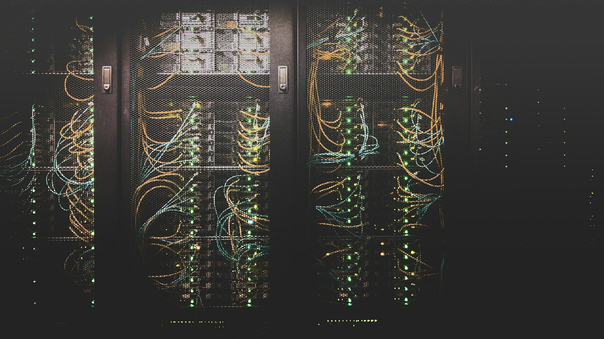
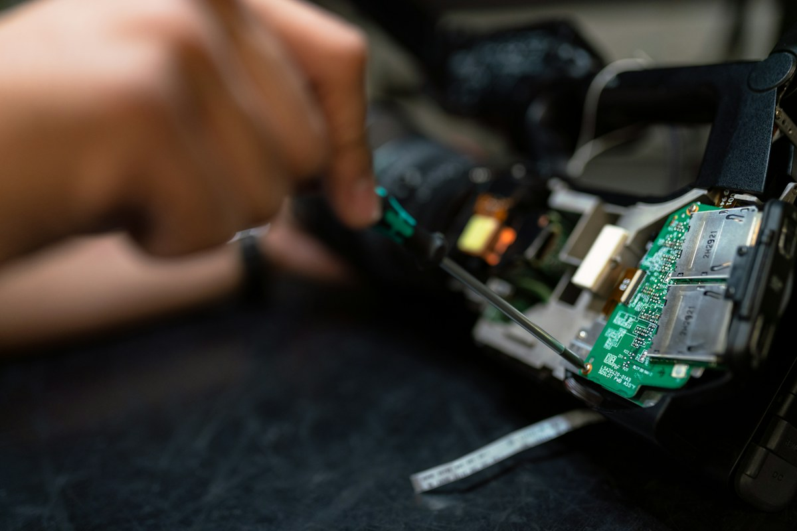
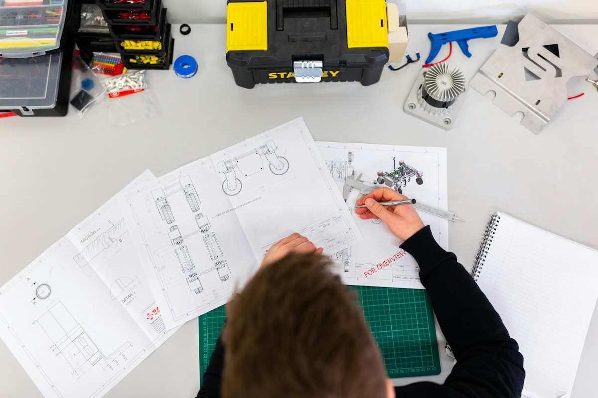

IT consulting & technology solutions
Make informed decisions with a clear view of systems, requirements and next steps.
Consulting · Engineering · Technology
Practical technology strategy, thoughtfully engineered software and resilient systems for the way your business works.
A fictional company concept. No client work or business claims are represented.

Built around your business
Good technology should make everyday work simpler, safer and more capable.
Vanta is a fictional technology partner created for this portfolio demonstration. Its services bring planning, delivery and long-term support together—so each solution starts with a real business need.
See the areas we supportWhat we do
From early planning to day-to-day reliability, each capability is shaped around your people, processes and priorities.
Make informed decisions with a clear view of systems, requirements and next steps.
Purpose-built websites, applications and integrations designed around how teams work.
Plan and support dependable networks, devices and the foundations behind them.
Choose and configure cloud services to support flexible, well-managed operations.
Strengthen everyday security practices, access controls and technology resilience.
Improve processes by connecting the right tools, information and ways of working.
Technology in practice
Illustrative imagery highlights the connected work behind secure, useful technology. These are not client projects.


Photography via Unsplash.
A considered process
Listen to the goal, the constraints and the people involved.
Agree on a practical direction and a clear scope of work.
Build, configure and document a solution for everyday use.
Review how it performs and identify sensible next improvements.
Start a conversation
Vanta Systems is a fictional demonstration brand. This link reaches Abel Thomas through the portfolio contact page.
Discuss a project